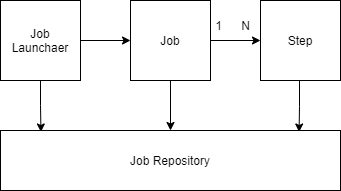

SpringBatchの前提知識は以下の通り。
DI(Dependancy Injection)とは、インスタンスを変数に代入すること。
[DIの例]
puclic class Hoge {
private job = new testJob();
}
@Component
puclic class TestJob implements Job {
...
}
@Component
public class Hoge{
@Autowired
private Job job;
}
| スコープ | 説明 |
|---|---|
| @Scope("singleton") | Spring起動時にインスタンスを1つだけ生成する。Springを停止するまで、このインスタンスを使いまわす。 Scopeアノテーションを付与しない場合はデフォルトでこの設定となる。 |
| @Scope("prototype") | @AutowiredでDIする度に新しいインスタンスの生成と破棄を行う。 |
SpringBatchはSpringを使ってバッチアプリケーションを開発するためのフレームワーク。
DI、バリデーション、DBアクセスなどSpringが標準で提供する機能に加えて、ファイルやDBの読み込み、書き込み、ジョブ管理など、バッチがよく利用する機能もサポートされる。
SpringBatchのアーキテクチャは以下の通りとなる。

| 項目 | 説明 |
|---|---|
| JobRepository | バッチの実行結果をDBに保存してくれる機能 |
| JobLauncher | バッチを実行するトリガー機能 |
| Job | バッチの全体を構成している管理単位 |
| Step | バッチの最小単位。一つのJobで複数のStepの実行フローを管理する。 |
| 項目 | 説明 |
|---|---|
| Chunk | データの読み込み、加工、書き込みという一般的なバッチ処理のフレームワークを提供してくれるモデル。
各処理はChunkが提供する以下のインターフェースを実装する。
|
| Tasklet | Chunkで対応出来合い機能を実装する場合に利用する。 |
本章ではSpringBatchを開発を行うための環境構築のメモを記載する。
以下のサイトからPostgreSQLをダウンロードする。
※執筆時点で最新版の14.1（Windows版)をダウンロードした。
https://www.enterprisedb.com/downloads/postgres-postgresql-downloads
ダウンロード後、以下の手順でインストールする。
以下の手順で、SpringBatchで利用するDBの設定を行う。
Create TABLE IF NOT EXISTS employee(
id INT PRIMARY KEY,
name VARCHAR(50),
age INT,
gender INT
);
STS上でSpringBatchアプリケーション用のプロジェクトを作成する。
※Lombock含めたSTSの設定は実施済みの前提とする。
| 分類 | ライブラリ |
|---|---|
| 開発ツール | Spring Boot DevTools |
| Lombock | |
| I/O | Spring Batch |
| SQL | JDBC API |
| Spring Data JDBC | |
| H2 Database |
mvn spring-boot:runを実行以下手順で作成したプロジェクトをGitHubに登録する。
git init
echo "# Study Spring Boot" >> README.md
git add .
git commit -m "first commit"
git remote add origin git@github.com:yushin1402/SpringBatch.git
git push -u origin master
ログ出力を行う簡単なサンプルアプリの作成を行う。
| ファイル名 | 説明 |
|---|---|
| com.example.batch.config | src/main/java配下に左記パッケージを作成する。 |
| BatchConfig.java | com.example.batch.configに左記Javaクラスを作成する。 |
| com.example.batch.tasklet |
src/main/java配下に左記パッケージを作成する。
Taskletインターフェースを利用して、Hello Worldをログ出力するtaskletを実装する。 |
| HelloTasklet.java | com.example.batch.taskletに左記Javaクラスを作成する。 |
package com.example.batch.tasklet;
import org.springframework.batch.core.StepContribution;
import org.springframework.batch.core.configuration.annotation.StepScope;
import org.springframework.batch.core.scope.context.ChunkContext;
import org.springframework.batch.core.step.tasklet.Tasklet;
import org.springframework.batch.repeat.RepeatStatus;
import org.springframework.stereotype.Component;
import lombok.extern.slf4j.Slf4j;
@Component
@StepScope
@Slf4j
public class HelloTasklet implements Tasklet{
@Override
public RepeatStatus execute(StepContribution contribution,
ChunkContext chunkContext) throws Exception {
log.info("Hello World");
return RepeatStatus.FINISHED;
}
}
Tasklet.execute(StepContribution, ChunkContext)をオーバーライドすることで、tasletを実装する。
@StepScopeを設定することで、インスタンスのライフサイクルをデフォルト設定のsingletonから変更する。
@StepScopeにより、Stepの開始時にインスタンスが作成され、ステップの完了時にインスタンスが破棄される挙動となる。
log.info()は@Slf4jを付与したことで利用できるメソッド。ログの標準出力を行う。
package com.example.batch.config;
import org.springframework.batch.core.Job;
import org.springframework.batch.core.Step;
import org.springframework.batch.core.configuration.annotation.EnableBatchProcessing;
import org.springframework.batch.core.configuration.annotation.JobBuilderFactory;
import org.springframework.batch.core.configuration.annotation.StepBuilderFactory;
import org.springframework.batch.core.launch.support.RunIdIncrementer;
import org.springframework.batch.core.step.tasklet.Tasklet;
import org.springframework.beans.factory.annotation.Autowired;
import org.springframework.context.annotation.Bean;
import org.springframework.context.annotation.Configuration;
@Configuration
@EnableBatchProcessing
public class BatchConfig {
@Autowired
private JobBuilderFactory jobBuilderFactory;
@Autowired
private StepBuilderFactory stepBuilderFactory;
@Autowired
private Tasklet helloTasklet;
@Bean
public Step taskletStep1() {
return stepBuilderFactory.get("HelloTaskletStep1")
.tasklet(helloTasklet)
.build();
}
@Bean
public Job taskletJob() throws Exception{
return jobBuilderFactory.get("HelloWorldTaskletjob")
.incrementer(new RunIdIncrementer())
.start(taskletStep1())
.build();
}
}
@Configutationと@Beanを利用することでJobとTaskletをBean登録している。
@EnableBatchProcessingを付与することで、Springバッチの設定に必要なインスタンスをDI出来るようになる。
| インスタンス | 説明 |
|---|---|
| JobBuilderFactory |
Jobを生成するためのクラス。上記ソースでは
jobBuilderFactory.get("HelloWorldTaskletjob")
.incrementer(new RunIdIncrementer())
.start(taskletStep1())
.build();
で「HelloWorldTaskletjob」と命名したジョブを生成している。このジョブには tasukletStep1()で生成したStepが取り込まれている。
.incrementer(new RunIdIncrementer)は、Jobに一意のIDを割り当てるための処理。
Job名とJobIdはSpringBatchによりDBに登録され、実行履歴が管理される。JobIdは主キーとなるため、重複違反とならないようにインクリメントする処理が必要となる。 RunIdIncrementerはSpringBatchが提供するクラスで、このコンストラクタを呼び出すことで、インクリメントの管理をしてくれる。
|
| StepBuilderFactory |
Stepを生成するためのクラス。上記ソースでは、
public Step taskletStep1() {
return stepBuilderFactory.get("HelloTaskletStep1")
.tasklet(helloTasklet)
.build();
で「HelloTaskletStep1」と命名したStepを生成している。 .tasklet(helloTasklet)で、HelloTasklet.javaで作成したクラスに記載されたHelloWorldをログ出力するTaskletを取り込み、Stepを作成している。
|
Started SpringBatchSampleApplication in 2.444 seconds (JVM running for 3.358)
Running default command line with: []
Job: [SimpleJob: [name=HelloWorldTaskletjob]] launched with the following parameters: [{run.id=1}]
Executing step: [HelloTaskletStep1]
Hello World
Step: [HelloTaskletStep1] executed in 29ms
Job: [SimpleJob: [name=HelloWorldTaskletjob]] completed with the following parameters: [{run.id=1}] and the following status: [COMPLETED] in 48ms
| ファイル名 | 説明 |
|---|---|
| com.example.batch.config | src/main/java配下に左記パッケージを作成する。 |
| BatchConfig.java | com.example.batch.configに左記Javaクラスを作成する。 |
| com.example.batch.chunk |
src/main/java配下に左記パッケージを作成する。
|
| HelloProcessor.java | com.example.batch.chunkに左記Javaクラスを作成する。 |
| HelloReader.java | com.example.batch.chunkに左記Javaクラスを作成する。 |
| HelloWriter.java | com.example.batch.chunkに左記Javaクラスを作成する。 |
package com.example.batch.chunk;
import org.springframework.batch.core.configuration.annotation.StepScope;
import org.springframework.batch.item.ItemReader;
import org.springframework.batch.item.NonTransientResourceException;
import org.springframework.batch.item.ParseException;
import org.springframework.batch.item.UnexpectedInputException;
import org.springframework.stereotype.Component;
import lombok.extern.slf4j.Slf4j;
@Component
@StepScope
@Slf4j
public class HelloReader implements ItemReader {
private String[] input = {"Hello","World","hoge","fuga",null,"The World"};
private int index = 0;
@Override
public String read() throws Exception, UnexpectedInputException, ParseException, NonTransientResourceException{
String message = input[index++];
log.info("Read:()", message);
return message;
}
}
Componentと@StepScopeを付与し、Bean登録とインスタンス生成のライフサイクルを定義する。
read()をオーバライドする。
read()のJavaDocには
以下の通り記載されている。
input変数に入力された文字列をread()内でinput[index++]により順次取り出し、ログ出力している。
index[input++]によるデータ取得はfor文で実装する必要があるが、read()をオーバライドすることで、for文が不要かつ、ループ終了の判定の考慮不要となっていると理解。
messageを返却している。inputの内容を1件ずつ処理して、後続のItemProcessorに渡す処理となる。
package com.example.batch.chunk;
import org.springframework.batch.core.configuration.annotation.StepScope;
import org.springframework.batch.item.ItemProcessor;
import org.springframework.stereotype.Component;
import lombok.extern.slf4j.Slf4j;
@Component
@StepScope
@Slf4j
public class HelloProcessor implements ItemProcessor{
@Override
public String process(String item) throws Exception{
item = "item + ★";
log.info("Processor:{}", item);
return item;
}
}
Componentと@StepScopeを付与し、Bean登録とインスタンス生成のライフサイクルを定義する。process()をオーバライドする。
process(String item)でItemReaderから引き渡されたitemに★を付与する処理でオーバライドしている。
itemがItemReaderから引き渡される処理はSpringBatchのフレームワークで制御している理解。
itemをreturnし、後続のItemWriterに引き渡している。
package com.example.batch.chunk;
import java.util.List;
import org.springframework.batch.core.configuration.annotation.StepScope;
import org.springframework.batch.item.ItemWriter;
import org.springframework.stereotype.Component;
import lombok.extern.slf4j.Slf4j;
@Component
@StepScope
@Slf4j
public class HelloWriter implements ItemWriter {
@Override
public void write(Listitems) throws Exception{
log.info("writer:{}",items);
log.info("===================");
}
}
Componentと@StepScopeを付与し、Bean登録とインスタンス生成のライフサイクルを定義する。write()をオーバライドする。
JavaDoc
の記載は以下の通り。
itemsをログ出力している。なお、itemsはProcessorから引き渡されたitemを複数保持する。<? extends String>はString型の全てのサブクラスを表している。
このサイトの解説が分かりやすかった。
package com.example.batch.config;
import org.springframework.batch.core.Job;
import org.springframework.batch.core.Step;
import org.springframework.batch.core.configuration.annotation.EnableBatchProcessing;
import org.springframework.batch.core.configuration.annotation.JobBuilderFactory;
import org.springframework.batch.core.configuration.annotation.StepBuilderFactory;
import org.springframework.batch.core.launch.support.RunIdIncrementer;
import org.springframework.batch.item.ItemProcessor;
import org.springframework.batch.item.ItemReader;
import org.springframework.batch.item.ItemWriter;
import org.springframework.beans.factory.annotation.Autowired;
import org.springframework.context.annotation.Bean;
import org.springframework.context.annotation.Configuration;
@Configuration
@EnableBatchProcessing
public class BatchConfig {
@Autowired
private JobBuilderFactory jobBuilderFactory;
@Autowired
private StepBuilderFactory stepBuilderFactory;
@Autowired
private ItemReader reader;
@Autowired
private ItemProcessor processor;
@Autowired
private ItemWriter writer;
@Bean
public Step chunkStep() {
return stepBuilderFactory.get("HelloChunkStep")
.chunk(1)
.reader(reader)
.processor(processor)
.writer(writer)
.build();
}
@Bean
public Job chunkJob() throws Exception{
return jobBuilderFactory.get("HelloWorldChunkjob")
.incrementer(new RunIdIncrementer())
.start(chunkStep())
.build();
}
}
@Autowiredで、作成したItemReader、ItemProcessor、ItemWriterをDIしている。
chunkStep()でreader(reader)→processor(processor)→writer(writer)の順番で呼び出している。chunkStep()で<String, String>chunk(1)を定義している。<Input, Output>chunk(コミット間隔)を意味する。InputはItemReaderが取り扱うデータ型、OutputはItemWriterが扱うデータ型を表す。
また、コミット間隔は一度に処理するデータ件数を表す。上記のソースでは1件ずつ処理する設定としている。
itemsに引き渡し、まとめてデータ出力することになる。
Job: [SimpleJob: [name=HelloWorldChunkjob]] launched with the following parameters: [{run.id=1}]
Executing step: [HelloChunkStep]
Read:()
Processor:Hello★
writer:[Hello★]
===================
Read:()
Processor:World★
writer:[World★]
===================
Read:()
Processor:hoge★
writer:[hoge★]
===================
Read:()
Processor:fuga★
writer:[fuga★]
===================
Read:()
Step: [HelloChunkStep] executed in 58ms
Job: [SimpleJob: [name=HelloWorldChunkjob]] launched with the following parameters: [{run.id=1}]
Executing step: [HelloChunkStep]
Read:()
Read:()
Read:()
Processor:Hello★
Processor:World★
Processor:hoge★
writer:[Hello★, World★, hoge★]
===================
Read:()
Read:()
Processor:fuga★
writer:[fuga★]
===================
Step: [HelloChunkStep] executed in 52ms
nullを読み取った場合は後続データが存在しないと判断され、5件目以降のnull,"The World"が処理されないもの。